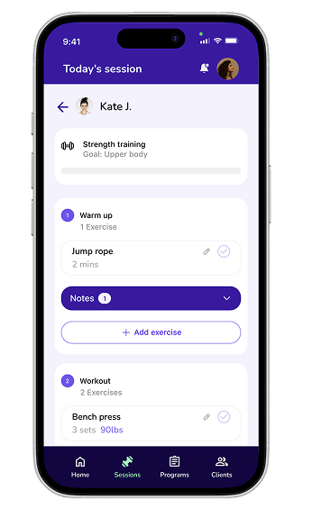
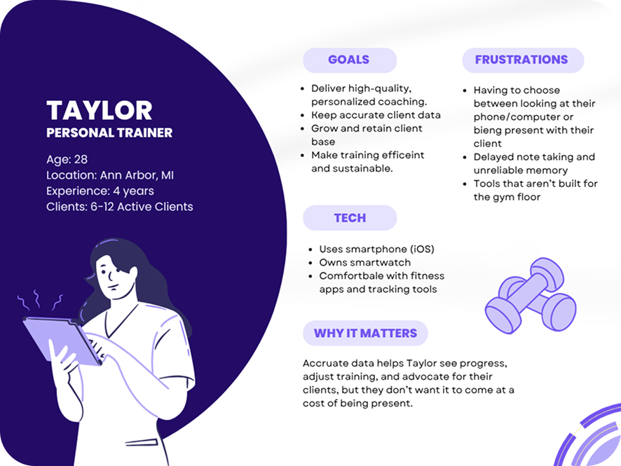
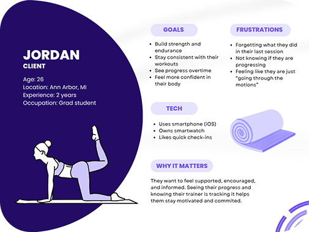
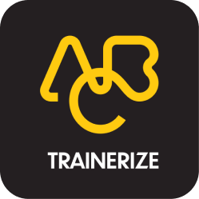
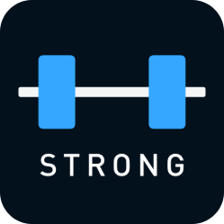
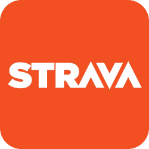

Spotter: Simplifying workout tracking for personal trainers
Designing a dual-platform mobile and wearable experience that helps personal trainers capture session data in real time, without losing the human connection that keeps clients coming back.



Personal trainers managing four or more clients must choose between logging data accurately and staying present with their clients. Spotter pairs a mobile app with a wearable to capture session data in real time, so a tap logs the set while the phone handles the rest.
Research
We conducted and synthesized 6 semi-structured interviews with personal trainers spanning 1–13 years of experience.
PRIMARY TOOLS USED FOR TRACKING & LOGGING
WHERE A TRAINER'S SESSION TIME GOES
Target personas
Personal trainers manage client progress and documentation during live sessions. Clients rely on trainers to track progress, adapt workouts, and keep them accountable.


Competitive Analysis
We looked at direct competitors built for trainers, indirect tools trainers piece together as workarounds, partial overlaps from the fitness-tracking space, and analogous tools people reach for to manage clients and workflows.

Direct

Indirect

Partial
Analogous
Scope
Scoped for trainers managing 4+ active clients across a broad age range (18–70+), excluding clinical or medical use. This raised the question: how might we help trainers scale personalized attention without losing the human connection that keeps clients coming back?
With scope locked, I translated our research into Spotter's experience. I mapped the trainer's workflow, defined the core information architecture, then tested and refined the flow until logging could happen without pulling attention away from coaching.
Sketches


Wireframes
We created a 26 screen mobile prototype and a 15 screen wearable prototype


Usability test
Five think-aloud tests revealed friction around navigation, affordances, and similar actions. We refined labels, cues, and pathways to create a clearer experience.
Before
After
From wireframes, we built a visual system around a bold purple palette and a consistent mobile-to-wearable language. Every screen was refined to keep trainers moving without breaking focus.
Fun team color ideation!
Color palette

Wearable screens
The wearable interface strips the experience down to its essentials. One tap to log, one tap to move on. Large tap targets, minimal text, voice fallback for everything that needs more detail.

01 — Launch

02 — Today's clients

03 — Pre-session

04 — Live logging
Mobile screens
While the wearable handles the moment, the mobile app handles everything around it — client profiles, session programs, historical trends, and post-session summaries.
My contribution
I took the Home and Session flows from initial wireframes through final implementation. I was also a key contributor to the final visual design system, helping design all mobile screens and wearable interfaces to create a cohesive cross-device experience.

Mobile prototype
Wearable prototype
Reflection
Designing for trainers means designing for attention. The product succeeds only if it protects presence during the session — you can't just make something fast, you have to make something that doesn't ask for attention at the wrong moment.
Progressive disclosure works best when it starts from a clear definition of minimum useful data — not from a list of possible metrics. That framing changed how I think about every feature prioritization decision.
Navigation clarity depends on naming and structure. Small mismatches in labels can create big confusion when actions look similar.
-
→
Validate Spotter in real gym environments with working trainers and live clients.
-
→
Refine wearable interactions for faster use, like haptic patterns, clearer data entry labels.
-
→
Explore integrations with calendars, messaging platforms, and fitness data services.